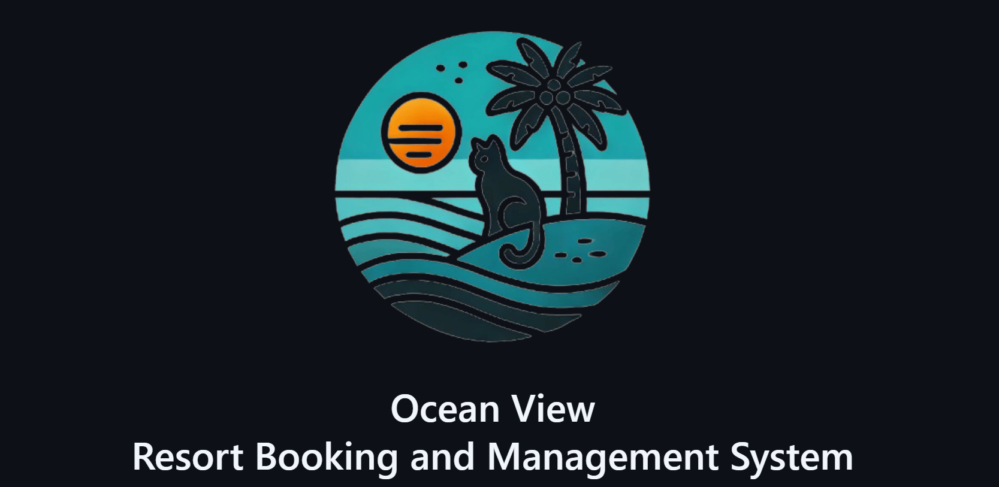
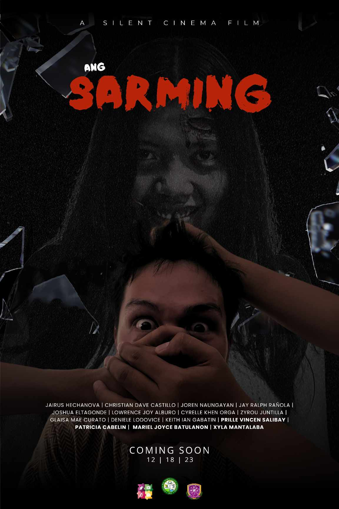
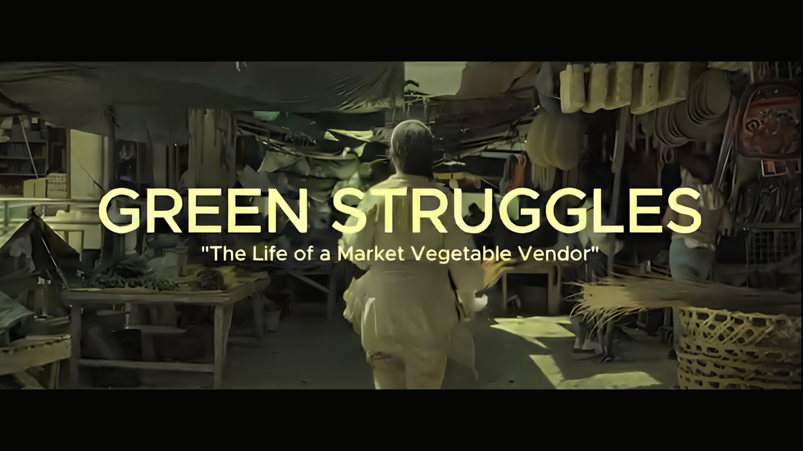
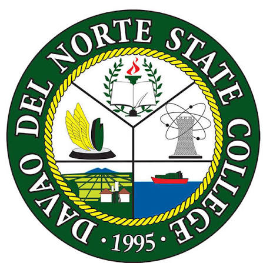
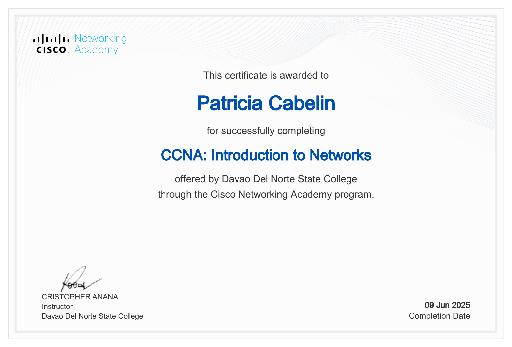
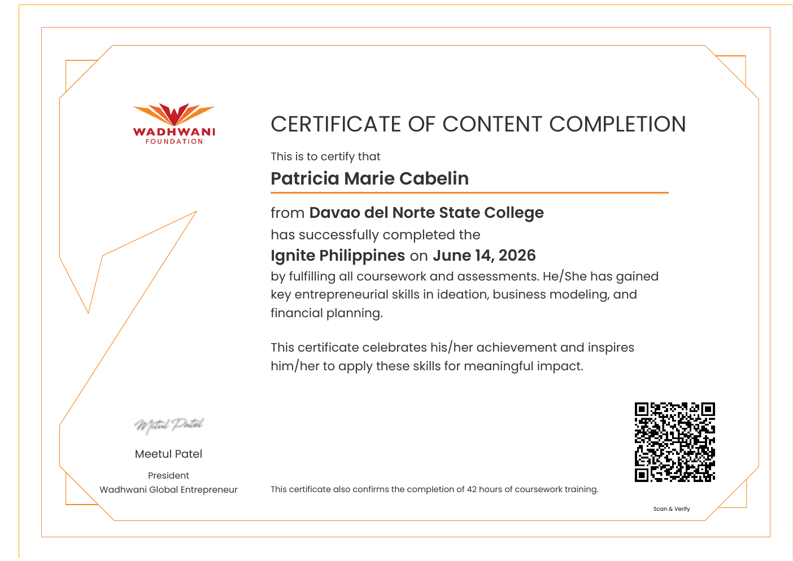

Design
- UI/UX Design
- Figma
- Graphic Design
- Presentation Design
4th Year BSIT Student · BSIT 4B
Aspiring IT professional interested in thoughtful design, clear documentation, and technology-driven solutions.
Studying at Davao del Norte State College and building skills to contribute to useful, innovative technology.
01 Curious by nature. Thoughtful in the details.
Professional profile
I am a fourth-year Bachelor of Science in Information Technology student at Davao del Norte State College, currently in BSIT 4B. My academic background includes the STEM strand, where I graduated with Honors and developed a strong interest in research and writing, including journalism.
Across elementary, high school, and senior high school, I regularly took on group leadership roles. I now serve as System Analyst Secretary for the Institute of Computing Organization, CODEx, for 2026–2027. Alongside academic and creative projects, these experiences have strengthened my interest in understanding systems, organizing information, and communicating ideas clearly.
I am exploring career paths in IT that bring together systems analysis, research, technical writing, design, and collaboration. I am open to different roles across the field and want to keep building practical technical knowledge while contributing through these strengths.
To become an IT professional who can contribute to the development of useful and innovative technology solutions while continuously learning and improving my skills.
What I bring
Skills developed through coursework, research, and collaboration.
Selected work
A space for systems, designs, and coursework projects as they are ready to share.
STUDY APP
A study app for creating and organizing decks, making front-and-back flashcards, and reviewing study material. Screens also show public community decks, account sign-in, and profile settings.

System Development · Academic ProjectTEAM PROJECT · CONTRIBUTOR
A web-based system for exploring resort and room options, checking availability, and managing reservations. I contributed to the project as part of the development team.

Horror · Short FilmSHORT FILM
A haunted mirror brings terror into one family’s life in this eerie short film about fear, mystery, and the horrors hidden in its reflection.

Documentary · Academic FilmBSIT 2A DOCUMENTARY
A documentary on how globalization affects local farmers and market vendors, and the traditions and community ties at risk.
Applied learning
Team and film work that has helped me build experience through collaboration and creative practice.
Project contributor
I contributed as a member of the development team on this resort booking and management system project.
See project detailsDirector · Scriptwriter · Supporting Actress
A collaborative horror short film about a haunted mirror and the family affected by it.
View the filmSystem Analyst Secretary · 2026–2027
Serving in a current organization role alongside my Information Technology studies.
Education

Bachelor of Science in Information Technology
Senior High School
Graduated with Honors
Learning & development
Professional learning and completed training.

NETWORKING · COMPLETED 2025CCNA: Introduction to NetworksDavao del Norte State College · Cisco Networking AcademyView certificate PDF
ENTREPRENEURSHIP · COMPLETED 2026Ignite PhilippinesWadhwani Global Entrepreneur · 42 hours of coursework training · June 14, 2026View certificate PDFHave a question or opportunity?
Feel free to reach out about learning, collaboration, or opportunities in IT.
cabelin.patriciamarie@dnsc.edu.ph